Artist-and-era chains
Type an artist, pick an era and a role — lead or ad-lib — and the whole chain loads in order: inserts, effect returns and the vocal bus.
One vocal plugin with a whole vocal chain for each artist and era — tuning, EQ, compression, de-essing, delays, reverbs and the vocal bus — built from its own modules.
This page describes Freally Takelight version 1.0: everything on it is in 1.0, and nothing planned for after 1.0 is on it.
Every figure is counted from the app itself. Nothing is estimated, and nothing is rounded up.
Nothing is for sale and nothing is downloadable before version 1.0. Then there is a free trial of the whole plugin, and one price, paid once: no subscription and no account. The audio you make with it is yours.
Type an artist, pick an era and a role — lead or ad-lib — and the whole chain loads in order: inserts, effect returns and the vocal bus.

Change chains while the track plays. The new chain is made ready away from the audio and crossfaded in over 30 milliseconds, so nothing pops.

One rack holds the whole chain: pitch correction, four kinds of EQ, six kinds of compressor, a de-esser, a gate, saturation, an exciter, lo-fi, a limiter, a doubler, a chorus, a flanger, a phaser, an auto-pan, delays, reverbs, four returns and a vocal bus.

Pitch correction from classic signal processing, with the key found from your vocal or a sidechain, and a low-latency mode for recording through it.

Simple shows four macros — Tune, Tone, Space and Amount. Advanced shows every module as rendered hardware, each card drawing what it does — the EQ curve over your vocal, the compressor's curve and what it takes — and every knob can be automated.

Input Check listens to ten seconds of your take and sets the Input knob, and the gate, the high-pass and the de-esser your chain has. A/B compares the chain against a reference file you load, loudness-matched, or against a second version of itself; the reference is never stored.

CLAP and VST3 on Windows, macOS and Linux, AU on macOS, and a standalone app. Saved with your project, latency reported so your DAW lines everything up, and safe in many instances at once.

A dark mode and a light mode, both in Freally green, with every knob, fader and switch rendered in Blender for each, and the take light that glows when the chain is live.

No account, no telemetry and no model. The plugin and the app never go online; update checks and licence activation run in a separate helper, only when you ask.
Freally Takelight 1.0 next to the vocal plugins producers reach for when they want a named sound. Every cell for another product comes from its maker's pages or published coverage, checked in October 2026; a cell they do not settle says not verified.
| Feature | Freally Takelight 1.0 | Muze | CLA Vocals | Cradle The Spirit |
|---|---|---|---|---|
| Price (USD, October 2026) | One price, once, after a free trial | $179lifetime, or $24 every 4 weeks | not verified | $119 |
| Chains named after artists | has itby artist, era and role | has it52 artist presets | does notone engineer's chain | does notone producer's chain |
| Simple and Advanced modes | has it | has it | not verified | not verified |
| Finds the key from your vocal | has it | has it | not verified | not verified |
| CLAP, VST3 and AU | has itCLAP · VST3 · AU | partlyVST3 · AU · AAX | not verified | not verified |
| Windows, macOS and Linux | has itWindows · macOS · Linux | partlyWindows · macOS | not verified | not verified |
| No AI or machine learning | has it | not verified | not verified | not verified |
Only Takelight has chains by artist, era and role, all three plugin formats, Linux as well as Windows and macOS, and no AI at all.
Muze has 52 artist presets today and runs in Pro Tools; Takelight's first artist chains arrived with version 0.5.0, and it is not a Pro Tools plugin at 1.0. CLA Vocals and The Spirit were made with the engineer and the producer they are named for.
Takelight's column is version 1.0, which is not out yet. The other products change too; this table is as of October 2026. Product names belong to their owners and are used here only to compare.
Every module is Takelight's own classic signal processing. No impulse responses, no samples, no borrowed code, and no settings copied from another product's presets.
A chain is named for the artist and the era, and nothing more. No likeness, no cover art, and no promise to make anyone sound like anyone.
A/B sets a reference file you load beside your vocal at the same loudness, so the louder one never fools your ears. The reference stays in memory and is never saved.
No telemetry and no cloud. Your vocals never leave your computer, and a build gate fails if networking code is ever added to the plugin or the app.
Artists and genres share their names with Freally MIDI Master and Freally Unloop, so one roster runs through the whole Freally line.
Stated plainly, because a feature list that hides its gaps is not worth reading. This page is version 1.0, and Takelight is built one rung at a time: not everything on it is built yet. Each rung on the road to 1.0 is marked with its state.
There are no downloads before version 1.0, and none on this page.